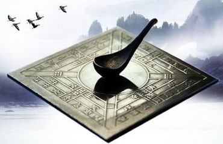
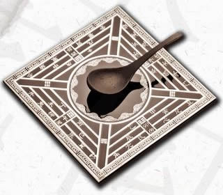

|
 |
 |
 |
指南针

指南针：远洋航海的“眼睛”
指南针的发明，解决了人类在茫茫大海和旷野中辨别方向的核心难题。
发展历程：从最早的指南工具——战国时期的“司南”讲起。到了北宋，人们发明了人工磁化技术，并制造出更便于使用的指南针，随后很快被应用于航海。南宋时期，又出现了与方位盘结合在一起的罗盘，使定向更为精确。
世界贡献：指南针于13世纪传入欧洲，为后来哥伦布发现美洲、麦哲伦环球航行等地理大发现提供了关键技术支持，开启了全球化的新时代。

| ||||
| ||||
|
指南针  指南针：远洋航海的“眼睛” 指南针的发明，解决了人类在茫茫大海和旷野中辨别方向的核心难题。 发展历程：从最早的指南工具——战国时期的“司南”讲起。到了北宋，人们发明了人工磁化技术，并制造出更便于使用的指南针，随后很快被应用于航海。南宋时期，又出现了与方位盘结合在一起的罗盘，使定向更为精确。 世界贡献：指南针于13世纪传入欧洲，为后来哥伦布发现美洲、麦哲伦环球航行等地理大发现提供了关键技术支持，开启了全球化的新时代。  |